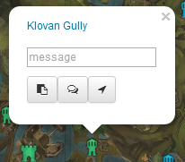

Guild Wars 2 Module
The manual
Map Messaging
You can double click on the map or single click an objective to open a marker-message.
- Copies the message to the clipboard including chat-only location (Intended for Game Chat, includes Link clickable in gw2 chat)
- Additionally includes the location as coordinates (When used with Teamspeak Chat, recipients with the app will see the message on the Map)
- Also includes a configurable "Going To" Message appended to the message. You can add your Guild Tag for example, if you wish so.
The Map Message will self destruct after 30s or when you click on it.